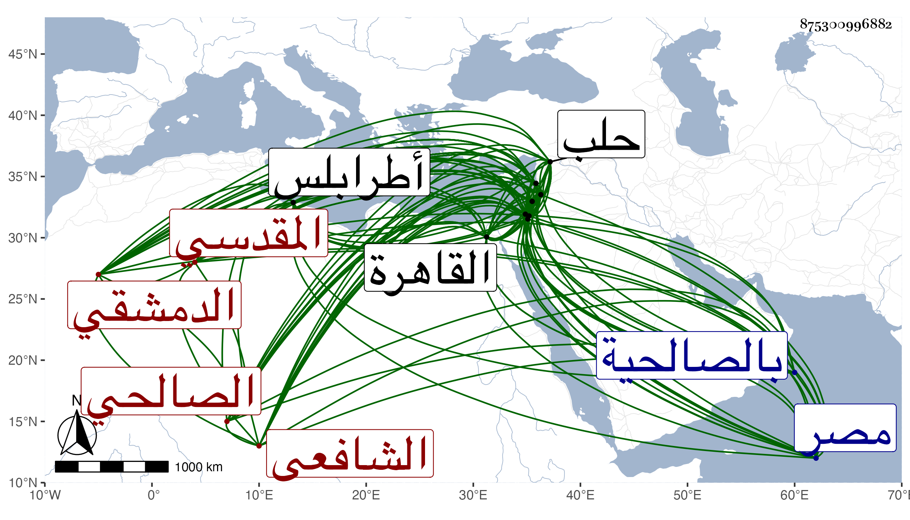

0902Sakhawi.DawLamic.ITO20230111-ara1.EIS1600.875300996882
Biography ID: 875300996882
1162
يوسف بن أحمد بن ناصر بن خليفة بن فرج بن عبد الله بن عبد الرحمن الجمال أبو المحاسن بن الشهاب الباعوني المقدسي ثم الصالحي الدمشقي الشافعي الماضي أبوه وأخواه إبرهيم ومحمد ويعرف بابن الباعوني . ولد في يوم السبت ثاني عشر جمادى الآخرة سنة خمس وثمانمائة بقاعة الخطابة من المسجد الأقصى ثم انتقل به أبوه إلى دمشق وهو في الرابعة فقرأ بها القرآن على جماعة منهم الشمس خطيب الشامية والشمس البصروي وقرأ عليه وعلى العلاء القابوني وغيرهما العربية وحفظ أيضا المنهاج الفرعي والأصلي وألفية ابن ملك وبحث على الشهاب الغزي في المنهاج الفرعي ثم في الفقه أيضا على البرهان بن خطيب عذراء ثم على الشمسين البرماوي والكفيري ومما بحثه على البرماوي في قواعد العلاني وفي أصول الفقه وسمع عليه دروسا في النحو وسمع على عائشة ابنة ابن عبد الهادي بدمشق والزين القبابي ببيت المقدس والتدمري بالخليل والشهاب بن رسلان بالرملة ولقي التاج بن الغرابيلي فأخذ عنه ورغبه في الطلب لهذا الشأن فما تيسر وباشر التوقيع بدمشق وغيره ثم ارتحل إلى القاهرة في سنة ثمان وعشرين وأكب على العلم إلى أن ألزمه النجم بن حجي بكتابة سر صفد فباشرها ثم أضيف إليه القضاء بها وتكررت ولايته لهما مرة بعد أخرى وناب في قضاء دمشق عن البهاء بن حجي ثم استقل به في سنة سبع وأربعين بعد أن كان استقل به في طرابلس ثم حلب وحمدت سيرته في مباشراته كلها سيما البيمارستان النوري حيث ضبط تركه ودخله وصرفه واستفضل من ذلك ما عمر منه فيه مكانا عظيما يعرف به واشترى أماكن وأضافها لوقفه لمزيد عفته وسياسته وتصميمه في الأمور وعزة نفسه وجلالته ووجاهته ووقعه في النفوس مع وفور ذكائه ورقة لطافته وبديع نظمه ونثره وحسن شكالته وبزته ووفور مروءته وما اشتمل عليه من كثرة التلاوة والصدقة وصوم الاثنين والخميس غالبا والقيام والتهجد والمحاسن الجمة بحيث نوه باحتضاره لقضاء الديار المصرية ، وقد درس بعدة أماكن كالعادلية الصغرى وغيرها استقلالا والشامية الجوانية والعزيزية نيابة وحج غير مرة وقدم القاهرة مرارا ولقيته بها وببلده ، وكان فقيه النفس سريع النظم مع حسنه نظم من المنهاج الفرعي قطعة ثم بدا له أن من لم ينظم العلم كالبهجة لا ينبغي له النظم ففتر عزمه وشرع في كتاب على نمط عنوان الشرف بزيادة علم الهندسة فكتب منه نصف كراس ومما كتبته عنه :
| إن غلقت أبواب رزق الفتى | وعاد صفر الكف والجيب |
| يضرع إلى مولاه في فتحها | فعنده مفاتح الغيب |
وترجمته مبسوطة في المعجم وبه ختم المعتبرون من قضاة دمشق . مات منفصلا عن القضاء دهرا للتوسع في ولاته إلى حد قل أن عهد نظيره بعد أن حج بأولاده وعياله وزار القدس والخليل بالصالحية في آخر ربيع الآخر سنة ثمانين يقال مسموما ودفن بتربتهم بسفح قاسيون رحمه الله وإيانا . وخلف أولادا كثيرين ذكورا وإناثا .
